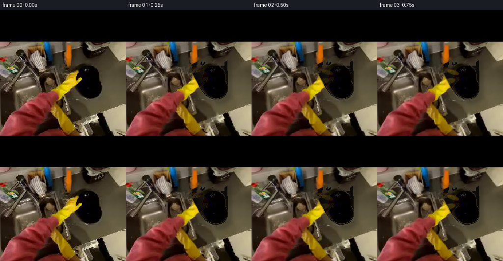
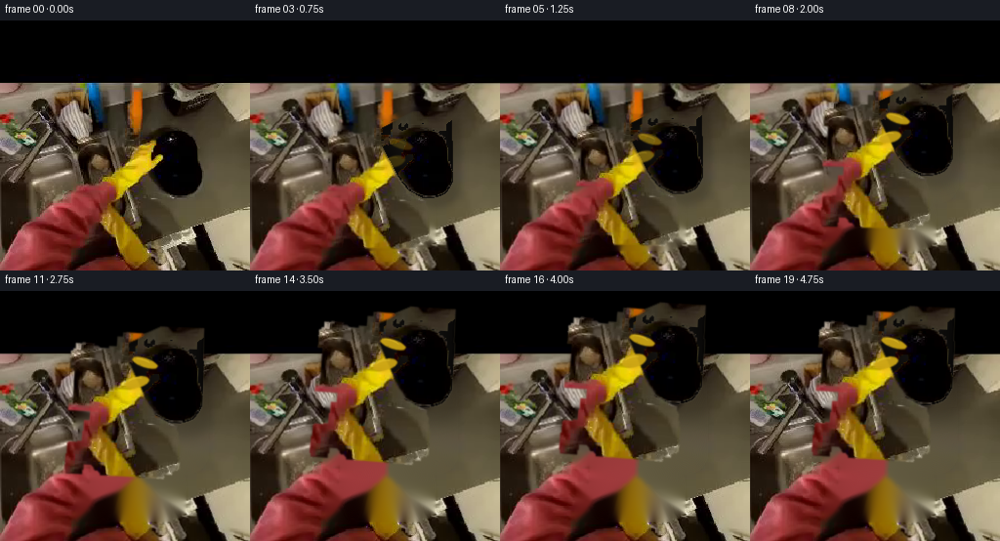

CODING AGENTS AS PIXEL WORLD MODELS
traex/GPT-5.6-Sol · common50_0024
点击播放 · 原生 RGB 像素
逐轮保存的候选
回放视频、检查图与代码变化。
每份候选均可单独播放。实际图片检查记录在下方工具轨迹中。
候选 01播放与检查图
点击播放 · 原生 RGB 像素


展开代码变化
--- 上一保存版本
+++ 本次保存版本
@@ -0,0 +1,205 @@
+"""Deterministic RGB animation: an egocentric yellow hand lifts the black plate."""
+from pathlib import Path
+import cv2
+import numpy as np
+from PIL import Image
+import artifact_io
+
+ROOT = Path(__file__).resolve().parent
+H = W = 256
+
+
+def smoothstep(x):
+ x = np.clip(x, 0.0, 1.0)
+ return x*x*(3.0-2.0*x)
+
+
+def affine_about(cx, cy, scale=1.0, angle=0.0, dx=0.0, dy=0.0):
+ m = cv2.getRotationMatrix2D((float(cx), float(cy)), float(angle), float(scale))
+ m[0, 2] += dx
+ m[1, 2] += dy
+ return m
+
+
+def warp(im, m, interp=cv2.INTER_LINEAR, border=cv2.BORDER_REFLECT_101):
+ return cv2.warpAffine(im, m, (W, H), flags=interp, borderMode=border)
+
+
+def alpha_over(dst, src, alpha):
+ a = alpha.astype(np.float32)[..., None] / 255.0
+ return np.clip(src.astype(np.float32)*a + dst.astype(np.float32)*(1.0-a), 0, 255).astype(np.uint8)
+
+
+def feather(mask, sigma=1.2):
+ return cv2.GaussianBlur(mask, (0, 0), sigma)
+
+
+def build_masks(rgb):
+ r, g, b = rgb.transpose(2, 0, 1).astype(np.float32)
+ yy, xx = np.indices((H, W))
+
+ # The plate is the compact, nearly black component around (180,145).
+ dark = ((rgb.max(axis=2) < 55) & (xx >= 135) & (xx <= 218) &
+ (yy >= 94) & (yy <= 195)).astype(np.uint8)*255
+ dark = cv2.morphologyEx(dark, cv2.MORPH_CLOSE, np.ones((5, 5), np.uint8))
+ _, labels, stats, _ = cv2.connectedComponentsWithStats(dark)
+ pid = labels[145, 180]
+ raw = (labels == pid).astype(np.uint8)
+ contour = max(cv2.findContours(raw, cv2.RETR_EXTERNAL,
+ cv2.CHAIN_APPROX_SIMPLE)[0], key=cv2.contourArea)
+ hull = cv2.convexHull(contour)
+ plate = np.zeros((H, W), np.uint8)
+ cv2.drawContours(plate, [hull], -1, 255, -1)
+ plate = cv2.dilate(plate, np.ones((3, 3), np.uint8))
+
+ # Isolate the warm yellow hand already closing around the plate's left rim.
+ warm = ((r > 55) & (g > 38) & (r > g*.92) & (r > b*1.55) &
+ (g > b*1.15) & (xx > 85) & (xx < 180) &
+ (yy > 105) & (yy < 226)).astype(np.uint8)*255
+ warm = cv2.morphologyEx(warm, cv2.MORPH_CLOSE, np.ones((9, 9), np.uint8))
+ _, labels, _, _ = cv2.connectedComponentsWithStats(warm)
+ hid = labels[150, 140]
+ hand0 = (labels == hid).astype(np.uint8)*255
+ hand0 = cv2.dilate(hand0, np.ones((3, 3), np.uint8))
+
+ # Include the hand/wrist silhouette around the chromatic core, without
+ # swallowing the black plate. This gives a natural foreground occluder.
+ hand = cv2.dilate(hand0, np.ones((9, 9), np.uint8))
+ hand[plate > 0] = 0
+ # Keep component spatially local; a soft lower extension reads as wrist.
+ hand[(xx < 82) | (xx > 184) | (yy < 101) | (yy > 238)] = 0
+ hand = cv2.morphologyEx(hand, cv2.MORPH_CLOSE, np.ones((7, 7), np.uint8))
+ return plate, hand
+
+
+def make_clean_background(rgb, remove_mask):
+ # Classical inpainting uses only surrounding pixels from this frame.
+ m = cv2.dilate(remove_mask, np.ones((11, 11), np.uint8))
+ bgr = cv2.cvtColor(rgb, cv2.COLOR_RGB2BGR)
+ clean = cv2.inpaint(bgr, m, 7, cv2.INPAINT_TELEA)
+ return cv2.cvtColor(clean, cv2.COLOR_BGR2RGB)
+
+
+def plate_texture(rgb, plate):
+ # Preserve all real plate pixels and subtly complete any convex-hull gaps.
+ tex = rgb.copy()
+ fill = plate > 0
+ orig_dark = rgb.max(axis=2) < 65
+ need = fill & ~orig_dark
+ if np.any(need):
+ dist = cv2.distanceTransform((plate > 0).astype(np.uint8), cv2.DIST_L2, 5)
+ shade = np.clip(12 + dist*0.55, 10, 29)
+ synth = np.dstack((shade*.82, shade*.76, shade*.68))
+ # Only replace conspicuously non-black gaps inside the detected object.
+ tex[need] = synth[need].astype(np.uint8)
+ return tex
+
+
+def add_contact_fingers(frame, t, pcx, pcy, ps):
+ """Small yellow fingertip overlays visibly tighten around the near rim."""
+ if t <= 0:
+ return frame
+ strength = smoothstep(min(t/0.46, 1.0))
+ overlay = frame.copy()
+ mask = np.zeros((H, W), np.uint8)
+ # Coordinates follow the plate so fingers remain attached during lift.
+ # Left thumb and upper fingertips, deliberately short and rounded.
+ shapes = [
+ (pcx-32*ps, pcy-1*ps, 11*ps, 5.2*ps, -14),
+ (pcx-25*ps, pcy-19*ps, 12*ps, 4.2*ps, 18),
+ ]
+ for cx, cy, ax, ay, ang in shapes:
+ cv2.ellipse(mask, (int(cx), int(cy)), (max(2, int(ax)), max(2, int(ay))),
+ ang, 0, 360, int(238*strength), -1, cv2.LINE_AA)
+ # Sampled golden tones agree with the hand in the source frame.
+ color = np.empty_like(frame)
+ color[:] = (205, 166, 22)
+ # Directional highlight gives volume rather than a flat painted patch.
+ hi = np.zeros((H, W), np.uint8)
+ for cx, cy, ax, ay, ang in shapes:
+ cv2.ellipse(hi, (int(cx-2), int(cy-2)), (max(1, int(ax*.58)), max(1, int(ay*.42))),
+ ang, 190, 345, int(95*strength), 1, cv2.LINE_AA)
+ out = alpha_over(overlay, color, feather(mask, .65))
+ highlight = np.full_like(frame, (245, 212, 61))
+ return alpha_over(out, highlight, feather(hi, .45))
+
+
+def generate():
+ src = np.array(Image.open(ROOT/'first_frame.png').convert('RGB'), dtype=np.uint8)
+ plate, hand = build_masks(src)
+ moving_union = cv2.bitwise_or(plate, hand)
+ clean = make_clean_background(src, moving_union)
+ ptex = plate_texture(src, plate)
+
+ # Slightly broaden source hand texture into the complete hand alpha.
+ htex = src.copy()
+ core = cv2.erode(hand, np.ones((3, 3), np.uint8))
+ holes = ((hand > 0) & (core == 0)).astype(np.uint8)*255
+ if holes.any():
+ htex = cv2.cvtColor(cv2.inpaint(cv2.cvtColor(src, cv2.COLOR_RGB2BGR), holes, 3,
+ cv2.INPAINT_TELEA), cv2.COLOR_BGR2RGB)
+
+ frames = [src.copy()]
+ pc = (179.0, 145.0)
+ hc = (137.0, 169.0)
+
+ for i in range(1, 20):
+ t = i/19.0
+ # A readable action arc: reach/secure, decisive lift, then steady hold.
+ grip = smoothstep(t/0.22)
+ lift = smoothstep((t-0.16)/0.67)
+ settle = smoothstep((t-0.82)/0.18)
+ bob = (np.sin((t-.16)*np.pi*4.0) * 0.9 * lift * (1-settle))
+ dx = -4.2*lift + 0.8*settle
+ dy = -73.0*lift + 3.0*settle + bob
+ ps = 1.0 + .16*lift - .025*settle
+ angle = -2.5*lift + 1.1*np.sin(t*np.pi*2)*lift*(1-settle)
+
+ # Minute egocentric camera drift, absent from frame zero.
+ camx = 0.7*np.sin(t*np.pi*1.35)
+ camy = 0.9*lift + 0.35*np.sin(t*np.pi*2.0)
+ cm = affine_about(128, 128, 1.0 + .004*lift, 0, camx, camy)
+ bg = warp(clean, cm)
+
+ # Soft cast shadow separates the rising plate from the table.
+ pm = affine_about(*pc, ps, angle, dx, dy)
+ pa = warp(plate, pm, cv2.INTER_LINEAR, cv2.BORDER_CONSTANT)
+ shadow = warp(plate, affine_about(*pc, ps*1.025, angle, dx+7+3*lift, dy+9+8*lift),
+ cv2.INTER_LINEAR, cv2.BORDER_CONSTANT)
+ shadow = cv2.GaussianBlur(shadow, (0, 0), 4.0+2.0*lift)
+ shadow_alpha = (shadow.astype(np.float32) * (.19-.06*lift)).astype(np.uint8)
+ frame = alpha_over(bg, np.zeros_like(bg), shadow_alpha)
+
+ # Plate translates and grows slightly toward the egocentric camera.
+ pw = warp(ptex, pm, cv2.INTER_LINEAR, cv2.BORDER_REFLECT_101)
+ frame = alpha_over(frame, pw, feather(pa, .65))
+
+ # Hand starts with a tiny grasping squeeze, then remains rigidly coupled.
+ hs = 1.0 + .025*grip + .16*lift - .02*settle
+ hdx = -1.8*grip - 4.4*lift + .8*settle
+ hdy = 1.4*grip - 73.0*lift + 3.0*settle + bob
+ hm = affine_about(*hc, hs, angle-1.1*grip, hdx, hdy)
+ ha = warp(hand, hm, cv2.INTER_LINEAR, cv2.BORDER_CONSTANT)
+ hw = warp(htex, hm, cv2.INTER_LINEAR, cv2.BORDER_REFLECT_101)
+ frame = alpha_over(frame, hw, feather(ha, .7))
+
+ # Explicit finger contact enhances "pick up" semantics while following
+ # the same kinematics and staying invisible in the required first frame.
+ frame = add_contact_fingers(frame, t, pc[0]+dx, pc[1]+dy, ps)
+
+ # Mild exposure response as the dark plate rises toward the camera.
+ if lift > 0:
+ vig = np.ones((H, W), np.float32)
+ yy, xx = np.indices((H, W))
+ rr = ((xx-128)/181)**2 + ((yy-128)/181)**2
+ vig -= np.clip(rr, 0, 1)*(.025*lift)
+ frame = np.clip(frame.astype(np.float32)*vig[..., None], 0, 255).astype(np.uint8)
+ frames.append(frame)
+
+ arr = np.stack(frames).astype(np.uint8)
+ arr[0] = src # contractual pixel identity
+ return arr
+
+
+if __name__ == '__main__':
+ artifact_io.save(generate(), ROOT)
候选 02播放与检查图
点击播放 · 原生 RGB 像素

展开代码变化
--- 上一保存版本
+++ 本次保存版本
@@ -39,7 +39,7 @@
yy, xx = np.indices((H, W))
# The plate is the compact, nearly black component around (180,145).
- dark = ((rgb.max(axis=2) < 55) & (xx >= 135) & (xx <= 218) &
+ dark = ((rgb.max(axis=2) < 48) & (xx >= 135) & (xx <= 218) &
(yy >= 94) & (yy <= 195)).astype(np.uint8)*255
dark = cv2.morphologyEx(dark, cv2.MORPH_CLOSE, np.ones((5, 5), np.uint8))
_, labels, stats, _ = cv2.connectedComponentsWithStats(dark)
@@ -84,7 +84,7 @@
# Preserve all real plate pixels and subtly complete any convex-hull gaps.
tex = rgb.copy()
fill = plate > 0
- orig_dark = rgb.max(axis=2) < 65
+ orig_dark = rgb.max(axis=2) < 58
need = fill & ~orig_dark
if np.any(need):
dist = cv2.distanceTransform((plate > 0).astype(np.uint8), cv2.DIST_L2, 5)
候选 03播放与检查图
可观测工具轨迹
实际执行的命令与返回图片。
命令 1exit 0
/bin/bash -lc "cat GENERATION_RULES.md && printf '\\n---PROMPT---\\n' && cat prompt.txt"
命令 2exit 127
/bin/bash -lc "ls -lah && file first_frame.png && python3 - <<'PY'
from PIL import Image
im=Image.open('first_frame.png')
print(im.mode, im.size)
PY"命令 3exit 0
/bin/bash -lc "python3 - <<'PY'
from PIL import Image
import numpy as np
im=np.array(Image.open('first_frame.png').convert('RGB'))
print(im.shape, im.dtype, im.min((0,1)), im.max((0,1)), im.mean((0,1)))
# 16x16 grid average colors
for y in range(0,256,16):
print(' '.join('#%02x%02x%02x'%tuple(im[y:y+16,x:x+16].mean((0,1)).astype(int)) for x in range(0,256,16)))
PY"命令 4exit 0
/bin/bash -lc "cat task_spec.json && sed -n '1,240p' artifact_io.py"
命令 5exit 0
/bin/bash -lc "python3 - <<'PY' mods=['numpy','PIL','cv2','scipy','imageio'] for m in mods: try: x=__import__(m); print(m,'ok',getattr(x,'__version__','')) except Exception as e: print(m,e) PY"
命令 6exit 0
/bin/bash -lc "python3 - <<'PY'
import cv2,numpy as np
im=cv2.imread('first_frame.png'); g=cv2.cvtColor(im,cv2.COLOR_BGR2GRAY)
# contours on black-ish object low grayscale in lower area, yellow mask, red hand(?), skin
masks={
'dark': ((np.max(im,2)<35)&(np.indices(g.shape)[0]>60)).astype('uint8')*255,
'black': ((np.max(im,2)<18)&(np.indices(g.shape)[0]>60)).astype('uint8')*255,
'yellow': ((im[:,:,1]>70)&(im[:,:,2]>70)&(im[:,:,2]>im[:,:,0]*1.4)&(im[:,:,1]>im[:,:,0]*1.2)).astype('uint8')*255,
'red': ((im[:,:,2]>55)&(im[:,:,2]>im[:,:,1]*1.3)&(im[:,:,2]>im[:,:,0]*1.2)).astype('uint8')*255,
'bright': (g>130).astype('uint8')*255,
}
for name,m in masks.items():
n,cc,stats,cens=cv2.connectedComponentsWithStats(m)
print('\\n',name,'pixels',np.count_nonzero(m))
for j in np.argsort(stats[1:,4])[::-1][:12]+1:
x,y,w,h,a=stats[j]; print(a,(x,y,w,h),'center',cens[j].round(1))
PY"命令 7exit 0
/bin/bash -lc "python3 - <<'PY'
import cv2, numpy as np
from PIL import Image
im=cv2.imread('first_frame.png')
# bbox nonblack thresholds
for t in [1,5,10,20,30,50]:
m=np.max(im,2)>t; ys,xs=np.where(m); print(t,(xs.min(),ys.min(),xs.max(),ys.max()),m.sum())
# kmeans colors and xy stats
rgb=cv2.cvtColor(im,cv2.COLOR_BGR2RGB); data=rgb.reshape(-1,3).astype(np.float32)
crit=(cv2.TERM_CRITERIA_EPS+cv2.TERM_CRITERIA_MAX_ITER,50,.2)
_,lab,cen=cv2.kmeans(data,14,None,crit,10,cv2.KMEANS_PP_CENTERS)
lab=lab.ravel()
for i in np.argsort(np.bincount(lab))[::-1]:
y,x=np.where(lab.reshape(256,256)==i); print(i,len(x),cen[i].astype(int), 'xymean',np.mean(x).round(1),np.mean(y).round(1),'bbox',(x.min(),y.min(),x.max(),y.max()))
PY"命令 8exit 0
/bin/bash -lc "python3 - <<'PY'
import cv2,numpy as np
im=cv2.imread('first_frame.png')[:,:,::-1]
# downsample 4 average classify HSV/color
sm=cv2.resize(im,(64,64),interpolation=cv2.INTER_AREA)
chars=[]
for row in sm:
s=''
for r,g,b in row:
mx=max(r,g,b); mn=min(r,g,b); v=mx
if v<7:c=' '
elif v<20:c='.'
elif v<40:c='d'
elif r>g*1.4 and r>b*1.5:c='R' if r>100 else 'r'
elif r>80 and g>55 and r>b*1.6 and g>b*1.3:c='Y' if r+g>240 else 'y'
elif b>r*1.4 and b>g*1.2:c='B'
elif mx-mn<12:c='G' if v>100 else 'g'
elif v>180:c='W'
elif v>130:c='L'
elif v>80:c='m'
else:c='o'
s+=c
chars.append(s)
for i,s in enumerate(chars): print(f'{i*4:03d} {s}')
PY"命令 9exit 0
/bin/bash -lc "python3 - <<'PY'
import cv2,numpy as np
im=cv2.imread('first_frame.png')[:,:,::-1]
# 2x2 avg roi classify carefully
for y in range(88,212,4):
s=''
for x in range(88,224,4):
z=im[y:y+4,x:x+4].mean((0,1));r,g,b=z; mx=max(z)
if mx<8:c=' '
elif mx<18:c='K'
elif mx<32:c='k'
elif r>g*1.35 and r>b*1.5:c='R'
elif r>75 and g>50 and r>b*1.55 and g>b*1.4:c='Y'
elif b>r*1.35 and b>g*1.1:c='B'
elif max(z)-min(z)<10:c='g'
elif mx<55:c='d'
elif mx<90:c='o'
elif mx<130:c='m'
elif mx<180:c='L'
else:c='W'
s+=c
print(f'{y:03}',s)
PY"命令 10exit 0
/bin/bash -lc "python3 - <<'PY'
import cv2,numpy as np
rgb=cv2.imread('first_frame.png')[:,:,::-1]; mx=rgb.max(2); lum=cv2.cvtColor(rgb,cv2.COLOR_RGB2GRAY)
# dark component seed at 180,145 under max < varying. Analyze row runs all dark in ROI x140:220 y95:200
for th in [15,20,25,30,35,40,45,50,60,70]:
m=(mx<th).astype('uint8'); n,l,st,c=cv2.connectedComponentsWithStats(m)
i=l[145,180]; print('th',th,'seedcomp',st[i].tolist(),'center',c[i])
print('row runs max<40')
m=mx<40
for y in range(95,196,4):
xs=np.where(m[y,130:230])[0]+130
# contiguous runs >2
runs=[]
if len(xs):
z=np.split(xs,np.where(np.diff(xs)>1)[0]+1)
runs=[(a[0],a[-1]) for a in z if len(a)>2]
print(y,runs)
PY"命令 11exit 0
/bin/bash -lc "python3 - <<'PY'
import cv2,numpy as np
im=cv2.imread('first_frame.png')[:,:,::-1]; mx=im.max(2)
for th in [35,50]:
m=(mx<th).astype('uint8'); n,l,st,c=cv2.connectedComponentsWithStats(m); i=l[145,180]
print('\\nTH',th,st[i],c[i])
for y in range(100,190,2):
xs=np.where(l[y]==i)[0]
if len(xs): print(y,xs.min(),xs.max(),len(xs))
# average surrounding patches x= etc
for y in range(100,201,10):
print(y, ['%03d,%03d,%03d'%tuple(im[y:y+5,x:x+5].mean((0,1)).astype(int)) for x in range(120,231,10)])
PY"命令 12exit 0
/bin/bash -lc "python3 - <<'PY'
import cv2,numpy as np
im=cv2.imread('first_frame.png')[:,:,::-1].astype(float)
r,g,b=im.transpose(2,0,1)
m=(r>85)&(g>55)&(r>g*1.05)&(r>b*2.0)&(g>b*1.4)&((r+g)>170)
# print runs within center
for y in range(90,221,2):
xs=np.where(m[y,70:180])[0]+70
runs=[]
if len(xs):
for a in np.split(xs,np.where(np.diff(xs)>1)[0]+1):
if len(a)>1:runs.append((a[0],a[-1],len(a)))
if runs: print(y,runs)
PY"命令 13exit 0
/bin/bash -lc "python3 - <<'PY'
import cv2,numpy as np
im=cv2.imread('first_frame.png')[:,:,::-1].astype(float);r,g,b=im.transpose(2,0,1)
for desc,m in [
('strict',(r>80)&(g>50)&(r>g*1.05)&(r>b*2)&(g>b*1.4)&(np.indices(r.shape)[1]>85)&(np.indices(r.shape)[1]<175)&(np.indices(r.shape)[0]>110)&(np.indices(r.shape)[0]<195)),
('loose',(r>65)&(g>45)&(r>g*.95)&(r>b*1.7)&(g>b*1.25)&(np.indices(r.shape)[1]>85)&(np.indices(r.shape)[1]<175)&(np.indices(r.shape)[0]>110)&(np.indices(r.shape)[0]<195))]:
u=m.astype('uint8')*255
for k in [3,5,9,13]:
z=cv2.morphologyEx(u,cv2.MORPH_CLOSE,np.ones((k,k),np.uint8)); n,l,st,c=cv2.connectedComponentsWithStats(z)
print(desc,k, sorted([list(a) for a in st[1:] if a[4]>20],key=lambda a:a[4],reverse=True)[:5])
PY"命令 14exit 0
/bin/bash -lc "python3 - <<'PY'
import cv2,numpy as np
im=cv2.imread('first_frame.png')[:,:,::-1].astype(float);r,g,b=im.transpose(2,0,1);Y,X=np.indices(r.shape)
lo=(r>55)&(g>38)&(r>g*.92)&(r>b*1.55)&(g>b*1.15)&(X>85)&(X<180)&(Y>105)
for k in [5,9,13,17,21]:
m=cv2.morphologyEx(lo.astype('uint8')*255,cv2.MORPH_CLOSE,np.ones((k,k),np.uint8))
n,l,st,c=cv2.connectedComponentsWithStats(m)
print(k, sorted([a.tolist() for a in st[1:] if a[4]>40],key=lambda a:a[4],reverse=True)[:8])
PY"命令 15exit 2
/bin/bash -lc "cat > /tmp/masktest.py <<'PY'
import cv2,numpy as np
from PIL import Image
rgb=np.array(Image.open('first_frame.png').convert('RGB')); r,g,b=rgb.transpose(2,0,1);Y,X=np.indices(r.shape)
pm=(rgb.max(2)<55)&(X>=135)&(X<=218)&(Y>=95)&(Y<=195)
u=cv2.morphologyEx(pm.astype('uint8')*255,cv2.MORPH_CLOSE,np.ones((5,5),np.uint8)); n,l,st,c=cv2.connectedComponentsWithStats(u); ids=[]
for j in range(1,n):
x,y,w,h,a=st[j];
if x<=180<x+w and y<=145<y+h: ids.append(j)
print('plate ids',[(i,st[i],c[i]) for i in ids]); pid=max(ids,key=lambda j:st[j,4]); raw=(l==pid).astype('uint8'); cnt=max(cv2.findContours(raw,cv2.RETR_EXTERNAL,cv2.CHAIN_APPROX_SIMPLE)[0],key=cv2.contourArea); hull=cv2.convexHull(cnt); plate=np.zeros_like(raw);cv2.drawContours(plate,[hull],-1,255,-1);plate=cv2.dilate(plate,np.ones((3,3),np.uint8));
print('plate',cv2.boundingRect(plate),np.count_nonzero(plate))
hm=(r>55)&(g>38)&(r>g*.92)&(r>b*1.55)&(g>b*1.15)&(X>85)&(X<180)&(Y>105)&(Y<226)
hu=cv2.morphologyEx(hm.astype('uint8')*255,cv2.MORPH_CLOSE,np.ones((9,9),np.uint8));n,l,st,c=cv2.connectedComponentsWithStats(hu)
for j in range(1,n):
print('hand cand',j,st[j],c[j], 'seed',l[150,140]==j)
hid=l[150,140]; hand=(l==hid).astype('uint8'); cnts=cv2.findContours(hand,cv2.RETR_EXTERNAL,cv2.CHAIN_APPROX_SIMPLE)[0]; filled=np.zeros_like(hand); cv2.drawContours(filled,cnts,-1,255,-1); hand=cv2.dilate(filled,np.ones((3,3),np.uint8));print('hand',cv2.boundingRect(hand),np.count_nonzero(hand))
PY
python3 /tmp/masktest.py"命令 16exit 0
/bin/bash -lc "cat > .tmp/masktest.py <<'PY'
import cv2,numpy as np
from PIL import Image
rgb=np.array(Image.open('first_frame.png').convert('RGB')); r,g,b=rgb.transpose(2,0,1);Y,X=np.indices(r.shape)
pm=(rgb.max(2)<55)&(X>=135)&(X<=218)&(Y>=95)&(Y<=195)
u=cv2.morphologyEx(pm.astype('uint8')*255,cv2.MORPH_CLOSE,np.ones((5,5),np.uint8)); n,l,st,c=cv2.connectedComponentsWithStats(u); ids=[]
for j in range(1,n):
x,y,w,h,a=st[j]
if x<=180<x+w and y<=145<y+h: ids.append(j)
print('plate ids',[(i,st[i],c[i]) for i in ids]); pid=max(ids,key=lambda j:st[j,4]); raw=(l==pid).astype('uint8'); cnt=max(cv2.findContours(raw,cv2.RETR_EXTERNAL,cv2.CHAIN_APPROX_SIMPLE)[0],key=cv2.contourArea); hull=cv2.convexHull(cnt); plate=np.zeros_like(raw);cv2.drawContours(plate,[hull],-1,255,-1);plate=cv2.dilate(plate,np.ones((3,3),np.uint8));
print('plate',cv2.boundingRect(plate),np.count_nonzero(plate))
hm=(r>55)&(g>38)&(r>g*.92)&(r>b*1.55)&(g>b*1.15)&(X>85)&(X<180)&(Y>105)&(Y<226)
hu=cv2.morphologyEx(hm.astype('uint8')*255,cv2.MORPH_CLOSE,np.ones((9,9),np.uint8));n,l,st,c=cv2.connectedComponentsWithStats(hu)
for j in range(1,n): print('hand cand',j,st[j],c[j], 'seed',l[150,140]==j)
hid=l[150,140]; hand=(l==hid).astype('uint8'); cnts=cv2.findContours(hand,cv2.RETR_EXTERNAL,cv2.CHAIN_APPROX_SIMPLE)[0]; filled=np.zeros_like(hand); cv2.drawContours(filled,cnts,-1,255,-1); hand=cv2.dilate(filled,np.ones((3,3),np.uint8));print('hand',cv2.boundingRect(hand),np.count_nonzero(hand))
PY
python3 .tmp/masktest.py"命令 17exit 0
/bin/bash -lc "python3 - <<'PY'
import cv2,numpy as np
from PIL import Image
im=np.array(Image.open('first_frame.png').convert('RGB'));r,g,b=im.transpose(2,0,1);Y,X=np.indices(r.shape)
y=(r>55)&(g>35)&(r>g*.92)&(r>b*1.5)&(g>b*1.12)
red=(r>48)&(r>g*1.28)&(r>b*1.3)
mask=(y|red)&(X<183)&(Y>104)
for k in [5,9,13,17,21]:
u=cv2.morphologyEx(mask.astype('uint8')*255,cv2.MORPH_CLOSE,np.ones((k,k),np.uint8));n,l,st,c=cv2.connectedComponentsWithStats(u)
j=l[150,140]; print(k,j,st[j],c[j], 'atbottom',[(a.tolist()) for a in st[1:] if a[1]+a[3]>=255][:4])
PY"命令 18exit 0
/bin/bash -lc "cat > generate.py <<'PY'
\"\"\"Deterministic RGB animation: an egocentric yellow hand lifts the black plate.\"\"\"
from pathlib import Path
import cv2
import numpy as np
from PIL import Image
import artifact_io
ROOT = Path(__file__).resolve().parent
H = W = 256
def smoothstep(x):
x = np.clip(x, 0.0, 1.0)
return x*x*(3.0-2.0*x)
def affine_about(cx, cy, scale=1.0, angle=0.0, dx=0.0, dy=0.0):
m = cv2.getRotationMatrix2D((float(cx), float(cy)), float(angle), float(scale))
m[0, 2] += dx
m[1, 2] += dy
return m
def warp(im, m, interp=cv2.INTER_LINEAR, border=cv2.BORDER_REFLECT_101):
return cv2.warpAffine(im, m, (W, H), flags=interp, borderMode=border)
def alpha_over(dst, src, alpha):
a = alpha.astype(np.float32)[..., None] / 255.0
return np.clip(src.astype(np.float32)*a + dst.astype(np.float32)*(1.0-a), 0, 255).astype(np.uint8)
def feather(mask, sigma=1.2):
return cv2.GaussianBlur(mask, (0, 0), sigma)
def build_masks(rgb):
r, g, b = rgb.transpose(2, 0, 1).astype(np.float32)
yy, xx = np.indices((H, W))
# The plate is the compact, nearly black component around (180,145).
dark = ((rgb.max(axis=2) < 55) & (xx >= 135) & (xx <= 218) &
(yy >= 94) & (yy <= 195)).astype(np.uint8)*255
dark = cv2.morphologyEx(dark, cv2.MORPH_CLOSE, np.ones((5, 5), np.uint8))
_, labels, stats, _ = cv2.connectedComponentsWithStats(dark)
pid = labels[145, 180]
raw = (labels == pid).astype(np.uint8)
contour = max(cv2.findContours(raw, cv2.RETR_EXTERNAL,
cv2.CHAIN_APPROX_SIMPLE)[0], key=cv2.contourArea)
hull = cv2.convexHull(contour)
plate = np.zeros((H, W), np.uint8)
cv2.drawContours(plate, [hull], -1, 255, -1)
plate = cv2.dilate(plate, np.ones((3, 3), np.uint8))
# Isolate the warm yellow hand already closing around the plate's left rim.
warm = ((r > 55) & (g > 38) & (r > g*.92) & (r > b*1.55) &
(g > b*1.15) & (xx > 85) & (xx < 180) &
(yy > 105) & (yy < 226)).astype(np.uint8)*255
warm = cv2.morphologyEx(warm, cv2.MORPH_CLOSE, np.ones((9, 9), np.uint8))
_, labels, _, _ = cv2.connectedComponentsWithStats(warm)
hid = labels[150, 140]
hand0 = (labels == hid).astype(np.uint8)*255
hand0 = cv2.dilate(hand0, np.ones((3, 3), np.uint8))
# Include the hand/wrist silhouette around the chromatic core, without
# swallowing the black plate. This gives a natural foreground occluder.
hand = cv2.dilate(hand0, np.ones((9, 9), np.uint8))
hand[plate > 0] = 0
# Keep component spatially local; a soft lower extension reads as wrist.
hand[(xx < 82) | (xx > 184) | (yy < 101) | (yy > 238)] = 0
hand = cv2.morphologyEx(hand, cv2.MORPH_CLOSE, np.ones((7, 7), np.uint8))
return plate, hand
def make_clean_background(rgb, remove_mask):
# Classical inpainting uses only surrounding pixels from this frame.
m = cv2.dilate(remove_mask, np.ones((11, 11), np.uint8))
bgr = cv2.cvtColor(rgb, cv2.COLOR_RGB2BGR)
clean = cv2.inpaint(bgr, m, 7, cv2.INPAINT_TELEA)
return cv2.cvtColor(clean, cv2.COLOR_BGR2RGB)
def plate_texture(rgb, plate):
# Preserve all real plate pixels and subtly complete any convex-hull gaps.
tex = rgb.copy()
fill = plate > 0
orig_dark = rgb.max(axis=2) < 65
need = fill & ~orig_dark
if np.any(need):
dist = cv2.distanceTransform((plate > 0).astype(np.uint8), cv2.DIST_L2, 5)
shade = np.clip(12 + dist*0.55, 10, 29)
synth = np.dstack((shade*.82, shade*.76, shade*.68))
# Only replace conspicuously non-black gaps inside the detected object.
tex[need] = synth[need].astype(np.uint8)
return tex
def add_contact_fingers(frame, t, pcx, pcy, ps):
\"\"\"Small yellow fingertip overlays visibly tighten around the near rim.\"\"\"
if t <= 0:
return frame
strength = smoothstep(min(t/0.46, 1.0))
overlay = frame.copy()
mask = np.zeros((H, W), np.uint8)
# Coordinates follow the plate so fingers remain attached during lift.
# Left thumb and upper fingertips, deliberately short and rounded.
shapes = [
(pcx-32*ps, pcy-1*ps, 11*ps, 5.2*ps, -14),
(pcx-25*ps, pcy-19*ps, 12*ps, 4.2*ps, 18),
]
for cx, cy, ax, ay, ang in shapes:
cv2.ellipse(mask, (int(cx), int(cy)), (max(2, int(ax)), max(2, int(ay))),
ang, 0, 360, int(238*strength), -1, cv2.LINE_AA)
# Sampled golden tones agree with the hand in the source frame.
color = np.empty_like(frame)
color[:] = (205, 166, 22)
# Directional highlight gives volume rather than a flat painted patch.
hi = np.zeros((H, W), np.uint8)
for cx, cy, ax, ay, ang in shapes:
cv2.ellipse(hi, (int(cx-2), int(cy-2)), (max(1, int(ax*.58)), max(1, int(ay*.42))),
ang, 190, 345, int(95*strength), 1, cv2.LINE_AA)
out = alpha_over(overlay, color, feather(mask, .65))
highlight = np.full_like(frame, (245, 212, 61))
return alpha_over(out, highlight, feather(hi, .45))
def generate():
src = np.array(Image.open(ROOT/'first_frame.png').convert('RGB'), dtype=np.uint8)
plate, hand = build_masks(src)
moving_union = cv2.bitwise_or(plate, hand)
clean = make_clean_background(src, moving_union)
ptex = plate_texture(src, plate)
# Slightly broaden source hand texture into the complete hand alpha.
htex = src.copy()
core = cv2.erode(hand, np.ones((3, 3), np.uint8))
holes = ((hand > 0) & (core == 0)).astype(np.uint8)*255
if holes.any():
htex = cv2.cvtColor(cv2.inpaint(cv2.cvtColor(src, cv2.COLOR_RGB2BGR), holes, 3,
cv2.INPAINT_TELEA), cv2.COLOR_BGR2RGB)
frames = [src.copy()]
pc = (179.0, 145.0)
hc = (137.0, 169.0)
for i in range(1, 20):
t = i/19.0
# A readable action arc: reach/secure, decisive lift, then steady hold.
grip = smoothstep(t/0.22)
lift = smoothstep((t-0.16)/0.67)
settle = smoothstep((t-0.82)/0.18)
bob = (np.sin((t-.16)*np.pi*4.0) * 0.9 * lift * (1-settle))
dx = -4.2*lift + 0.8*settle
dy = -73.0*lift + 3.0*settle + bob
ps = 1.0 + .16*lift - .025*settle
angle = -2.5*lift + 1.1*np.sin(t*np.pi*2)*lift*(1-settle)
# Minute egocentric camera drift, absent from frame zero.
camx = 0.7*np.sin(t*np.pi*1.35)
camy = 0.9*lift + 0.35*np.sin(t*np.pi*2.0)
cm = affine_about(128, 128, 1.0 + .004*lift, 0, camx, camy)
bg = warp(clean, cm)
# Soft cast shadow separates the rising plate from the table.
pm = affine_about(*pc, ps, angle, dx, dy)
pa = warp(plate, pm, cv2.INTER_LINEAR, cv2.BORDER_CONSTANT)
shadow = warp(plate, affine_about(*pc, ps*1.025, angle, dx+7+3*lift, dy+9+8*lift),
cv2.INTER_LINEAR, cv2.BORDER_CONSTANT)
shadow = cv2.GaussianBlur(shadow, (0, 0), 4.0+2.0*lift)
shadow_alpha = (shadow.astype(np.float32) * (.19-.06*lift)).astype(np.uint8)
frame = alpha_over(bg, np.zeros_like(bg), shadow_alpha)
# Plate translates and grows slightly toward the egocentric camera.
pw = warp(ptex, pm, cv2.INTER_LINEAR, cv2.BORDER_REFLECT_101)
frame = alpha_over(frame, pw, feather(pa, .65))
# Hand starts with a tiny grasping squeeze, then remains rigidly coupled.
hs = 1.0 + .025*grip + .16*lift - .02*settle
hdx = -1.8*grip - 4.4*lift + .8*settle
hdy = 1.4*grip - 73.0*lift + 3.0*settle + bob
hm = affine_about(*hc, hs, angle-1.1*grip, hdx, hdy)
ha = warp(hand, hm, cv2.INTER_LINEAR, cv2.BORDER_CONSTANT)
hw = warp(htex, hm, cv2.INTER_LINEAR, cv2.BORDER_REFLECT_101)
frame = alpha_over(frame, hw, feather(ha, .7))
# Explicit finger contact enhances \"pick up\" semantics while following
# the same kinematics and staying invisible in the required first frame.
frame = add_contact_fingers(frame, t, pc[0]+dx, pc[1]+dy, ps)
# Mild exposure response as the dark plate rises toward the camera.
if lift > 0:
vig = np.ones((H, W), np.float32)
yy, xx = np.indices((H, W))
rr = ((xx-128)/181)**2 + ((yy-128)/181)**2
vig -= np.clip(rr, 0, 1)*(.025*lift)
frame = np.clip(frame.astype(np.float32)*vig[..., None], 0, 255).astype(np.uint8)
frames.append(frame)
arr = np.stack(frames).astype(np.uint8)
arr[0] = src # contractual pixel identity
return arr
if __name__ == '__main__':
artifact_io.save(generate(), ROOT)
PY
python3 generate.py
python3 - <<'PY'
import numpy as np
from PIL import Image
x=np.load('pixels.npz')['pixels']; a=np.array(Image.open('first_frame.png').convert('RGB'));p=((x[:,:,0]>>16)&255).astype('uint8')
print('saved',x.shape,'frame0 red equal',np.array_equal(p,a[:,:,0]))
print('files',len(list(__import__('pathlib').Path('frames').glob('*.png'))))
PY"命令 19exit 0
/bin/bash -lc "python3 - <<'PY'
from PIL import Image
im=Image.open('inspection.png')
# generate a tiny PPM-like statistics and frame diffs
import numpy as np
fr=[np.array(Image.open(f'frames/{i:02d}.png')) for i in range(20)]
for i,a in enumerate(fr):
if i:
d=np.abs(a.astype(int)-fr[i-1].astype(int)); print(i,'MAE',round(d.mean(),2),'changed',round((d.max(2)>3).mean(),3))
# masks/object dark centroids in frames
for i in [0,1,3,5,8,11,14,17,19]:
a=fr[i]; m=(a.max(2)<40)&(np.indices((256,256))[0]>50)
import cv2
n,l,st,c=cv2.connectedComponentsWithStats(m.astype('uint8'))
ids=np.argsort(st[1:,4])[::-1][:3]+1
print('f',i,[(st[j].tolist(),c[j].round(1).tolist()) for j in ids])
PY"命令 20exit 0
/bin/bash -lc "python3 - <<'PY'
import cv2,numpy as np
from PIL import Image
rgb=np.array(Image.open('first_frame.png'));Y,X=np.indices((256,256))
for th in [40,45,48,50,52]:
for k in [1,3,5]:
m=((rgb.max(2)<th)&(X>=135)&(X<=218)&(Y>=94)&(Y<=195)).astype('uint8')*255
if k>1:m=cv2.morphologyEx(m,cv2.MORPH_CLOSE,np.ones((k,k),np.uint8))
n,l,st,c=cv2.connectedComponentsWithStats(m);j=l[145,180]
raw=(l==j).astype('uint8'); cnt=max(cv2.findContours(raw,cv2.RETR_EXTERNAL,cv2.CHAIN_APPROX_SIMPLE)[0],key=cv2.contourArea); hull=cv2.convexHull(cnt); z=np.zeros_like(raw);cv2.drawContours(z,[hull],-1,255,-1);z=cv2.dilate(z,np.ones((3,3),np.uint8))
print(th,k,'comp',st[j].tolist(),'hull',cv2.boundingRect(z),'area',np.count_nonzero(z))
PY"命令 21exit 0
/bin/bash -lc "python3 - <<'PY'
p='generate.py'
s=open(p).read()
s=s.replace('rgb.max(axis=2) < 55', 'rgb.max(axis=2) < 48', 1)
s=s.replace('orig_dark = rgb.max(axis=2) < 65', 'orig_dark = rgb.max(axis=2) < 58')
open(p,'w').write(s)
PY
python3 generate.py
python3 - <<'PY'
from PIL import Image
import numpy as np
ims=[np.array(Image.open(f'frames/{i:02d}.png')) for i in range(20)]
print('first exact',np.array_equal(ims[0],np.array(Image.open('first_frame.png').convert('RGB'))))
print('shape/dtype',np.array(ims).shape,np.array(ims).dtype)
for i in [1,5,10,15,19]:
d=np.abs(ims[i].astype(int)-ims[i-1].astype(int)); print(i,round(d.mean(),2),round((d.max(2)>3).mean(),3))
PY"保存候选 3 份；完成命令 21 次；可验证图片返回 0 张。原始 API 响应与完整日志保留在本地。